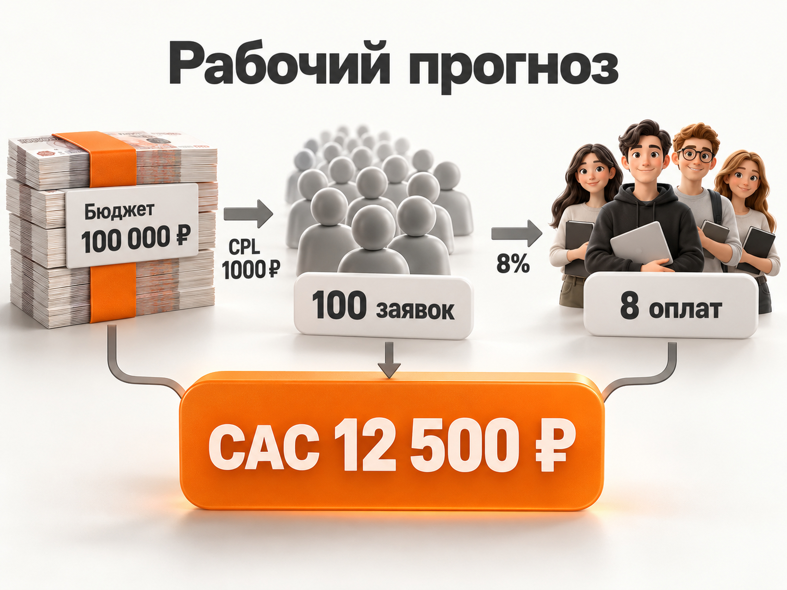

Блог о платном трафике
Продвижение онлайн-школы английского языка через Яндекс Директ
Для онлайн-школы английского языка Яндекс Директ подходит прежде всего как источник уже сформированного спроса. Люди сами ищут курсы английского онлайн, разговорный английский, занятия для работы, путешествий, переезда, подготовки к собеседованию или экзамену.
Но конкурировать по общему запросу «английский онлайн» со всеми крупными школами сразу дорого. Поэтому рабочая схема строится не вокруг одной универсальной рекламы, а вокруг сегментов, разных мотивов обучения и полноценной воронки от клика до оплаты.
Для первоначального прогноза федеральной онлайн-школы я бы закладывал примерно 800-1500 ₽ за заявку на пробный урок, диагностику или другой достаточно близкий к продаже шаг. Это расчётный рабочий диапазон, а не средний показатель рынка. При слабом сайте, общем оффере и дорогом поисковом трафике CPL может оказаться заметно выше.
Для полноценного теста по России разумно иметь около 100 000-150 000 ₽ рекламного бюджета на месяц. Меньший бюджет тоже можно использовать, но тогда особенно важно не дробить статистику на множество кампаний.
Что показывают свежие данные по рекламе английского языка
У онлайн-школ очень разное определение лида. Где-то конверсией считается email за бесплатный материал, где-то регистрация на вебинар, где-то запись на пробное занятие. Поэтому сравнивать CPL без понимания воронки нельзя.
В опубликованном кейсе онлайн-школы английского языка 2026 года за пять дней получили 42 заявки на бесплатный пробный урок при рекламном бюджете 80 000 ₽. Расчётная стоимость заявки составляет около 1905 ₽. Из этих заявок 13 закончились продажей, то есть стоимость привлечённого платящего ученика получилась около 6154 ₽. Это единичный кейс, а не рыночная норма, но он хорошо показывает, почему более дорогой лид иногда оказывается выгоднее дешёвой регистрации. (vc.ru)
В отраслевом материале по языковым школам, опубликованном в августе 2026 года, в качестве ориентира для Директа приводится CPL 600-1200 ₽. Этот диапазон также нельзя считать официальной средней по рынку, но он даёт дополнительную точку отсчёта. (m-context.ru)
Отдельно интересен официальный кейс Skyeng. В тесте на Поиске комбинаторные объявления относительно обычных текстово-графических дали на 50% больше заявок на пробные уроки и снизили CPA на 12,7%. Результаты относятся к сентябрю 2025 года, сам кейс Яндекс опубликовал в апреле 2026 года. (b2b.yandex.ru)
Из этих данных не следует, что хорошая заявка обязательно должна стоить 600, 1000 или 1900 ₽. Правильная стоимость определяется экономикой конкретной школы.
Сначала нужно определить допустимую стоимость ученика
Главная ошибка при прогнозировании рекламы онлайн-школы - начинать с вопроса «сколько стоит лид».
Начинать нужно с допустимой стоимости нового платящего ученика.
Воронка выглядит так:
реклама -> заявка -> пробный урок -> состоявшийся пробный урок -> оплата -> повторные платежи
Допустим, школа готова тратить на привлечение нового ученика максимум 15 000 ₽, а из заявки в первую оплату переходит 8% пользователей.
Тогда:
допустимый CPL = 15 000 × 8% = 1200 ₽
Если реклама приводит заявки дешевле 1200 ₽ при сохранении качества, экономика укладывается в план.
Если фактический CPL составляет 700 ₽, но оплачивает обучение только 2% лидов, стоимость нового ученика будет уже 35 000 ₽. Формально дешёвые лиды окажутся дорогими продажами.
Поэтому оценивать Яндекс Директ для онлайн-школы только по CPL нельзя.
Прогноз бюджета и количества заявок

Возьмём для расчёта рекламный бюджет 100 000 ₽ в месяц.
Это не рекомендация для любой школы, а модель, которая позволяет увидеть порядок цифр.
| Сценарий | CPL | Заявки | Заявка -> оплата | Оплаты | CAC |
|---|---|---|---|---|---|
| Осторожный | 1500 ₽ | 67 | 6% | около 4 | около 25 000 ₽ |
| Рабочий | 1000 ₽ | 100 | 8% | около 8 | около 12 500 ₽ |
| Сильный | 700 ₽ | 143 | 10% | около 14 | около 7100 ₽ |
Конверсия заявки в оплату здесь является допущением модели, а не отраслевой статистикой.
Прогноз становится полезным только после подстановки фактической экономики школы: стоимости обучения, маржи, среднего срока обучения, повторных платежей и реальной конверсии отдела продаж.
Для предварительной оценки поискового трафика можно дополнительно использовать Прогноз бюджета Яндекс Директа, но финальные CPC и CPL всё равно становятся понятны только после запуска.
Что предлагать в рекламе
Прямая продажа большого курса холодному пользователю обычно создаёт лишнее сопротивление. В большинстве случаев Директу нужна понятная промежуточная точка входа.
Для онлайн-школы это может быть:
- бесплатный пробный урок;
- определение уровня английского;
- консультация методиста;
- индивидуальный план обучения;
- тестирование разговорного уровня;
- вводное занятие с преподавателем.
Смысл не в слове «бесплатно», а в том, чтобы пользователь сделал действие, после которого школа реально может перевести его в обучение.
Если лид-магнит собирает сотни дешёвых регистраций, которые почти не доходят до отдела продаж, оптимизировать рекламу на такую цель опасно.
Нельзя рекламировать «английский для всех»
У онлайн-школы может быть один продукт, но причины его купить разные.
Человек может изучать английский:
- с нуля;
- для работы;
- для IT;
- для собеседования;
- для путешествий;
- для переезда;
- для разговорной практики;
- для бизнеса;
- для экзамена;
- для повышения текущего уровня.
Эти сегменты отличаются запросами, аргументами и ожиданиями.
Объявление «Онлайн-курсы английского языка» формально подходит всем, но почти ни с кем не разговаривает на его языке.
Лучше связывать цепочку целиком:
запрос -> объявление -> оффер -> посадочная страница
Например, человек ищет английский для собеседования. В объявлении он видит подготовку именно к интервью, а после перехода попадает не на общую главную страницу школы, а на предложение для этой задачи.
Как запускать Поиск Яндекс Директа
Поиск я бы использовал первым каналом для проверки сформированного спроса.
Основу семантики можно разделить на несколько направлений.
Первое - прямой коммерческий спрос:
«курсы английского онлайн», «онлайн школа английского», «учить английский с преподавателем онлайн».
Второе - спрос по задаче:
«английский для работы», «английский для IT», «английский для путешествий», «подготовка к собеседованию на английском».
Третье - спрос по формату:
«индивидуальные занятия английским онлайн», «разговорный английский онлайн», «английский с носителем».
Четвёртое - отдельные продукты, если школа действительно их продаёт: IELTS, TOEFL, бизнес-английский, подготовка к экзаменам и другие специализированные направления.
Информационные запросы вроде «как быстро выучить английский», «таблица неправильных глаголов» или «английские слова для начинающих» могут давать огромный объём, но для прямой продажи их стоит тестировать отдельно.
После запуска нужно регулярно смотреть реальные поисковые запросы, а не только исходные ключевые фразы.
Нужна ли РСЯ онлайн-школе
Да. Для английского языка РСЯ интересна тем, что аудитория значительно шире числа людей, которые прямо сейчас вводят коммерческий запрос.
Здесь можно тестировать аудитории по интересам и привычкам, тематические запросы, собственные сегменты Метрики и данные клиентской базы.
Особенно хорошо РСЯ подходит для предложений, которые понятны без долгих объяснений:
«Проверьте свой уровень английского»
«Пробный урок бесплатно»
«Английский для IT»
«Подготовка к собеседованию»
«Разговорный английский»
Но Поиск и РСЯ лучше оценивать отдельно. У них разная механика спроса, разные креативы и разная конверсия.
Подробнее эта разница разобрана в статье «Поиск или РСЯ в Яндекс Директе».
Какие кампании использовать в 2026 году
Основным рабочим типом кампании остаётся Единая перфоманс-кампания. В ней можно отдельно запускать продвижение на Поиске и в Рекламной сети Яндекса и использовать тематические слова, автотаргетинг, интересы, сегменты аудиторий и другие настройки. (yandex.ru)
Я бы не создавал десятки узких кампаний по каждому небольшому сегменту.
Автостратегиям нужна статистика. Яндекс указывает минимум 10 конверсий в неделю для обучения стратегии «Максимум конверсий», а в рекомендациях по бюджету говорит ориентироваться примерно на 10-20 конверсий в неделю. (yandex.ru)
Если плановый CPL составляет 1000 ₽, это означает недельный бюджет примерно 10 000-20 000 ₽ только для получения необходимого объёма конверсий.
Поэтому при бюджете 100 000 ₽ бессмысленно создавать десять кампаний по 10 000 ₽ в месяц и ждать стабильного обучения каждой.
На небольшом объёме лучше несколько крупных кампаний и одна достаточно частая целевая конверсия.
Эта логика подробнее разобрана в статье о выборе стратегии Яндекс Директа.
На какую цель оптимизировать рекламу
Лучший вариант - самая глубокая цель, которая при этом происходит достаточно часто.
Если школа получает 200 заявок и только пять оплат в месяц, обучать кампанию непосредственно на оплату рано.
Если из 200 заявок 80 человек действительно подходят школе и записываются на пробное занятие, эта цель уже может быть намного полезнее обычной отправки формы.
По мере накопления данных цепочка может выглядеть так:
заявка -> квалифицированная заявка -> пробный урок назначен -> пробный урок состоялся -> оплата
Данные из CRM стоит возвращать в Метрику как офлайн-конверсии. Яндекс позволяет использовать такие события для анализа и оптимизации рекламных кампаний. (yandex.ru)
Для образовательной ниши это особенно важно, потому что рекламная система иначе видит только отправленную форму и не знает, кто действительно дошёл до занятия и заплатил.
На сайте уже есть отдельная инструкция по передаче офлайн-конверсий из CRM в Яндекс Директ.
Что должно быть на посадочной странице
Дорогой поиск нельзя исправить одной настройкой рекламного кабинета. Конверсия страницы напрямую определяет CPL.
На странице должны быстро считываться:
- для кого предназначено обучение;
- какой результат получает ученик;
- формат занятий;
- преподаватели;
- стоимость или понятный принцип формирования цены;
- отзывы и результаты учеников;
- как проходит пробное занятие;
- что произойдёт после заявки.
Для разных крупных сегментов желательно делать отдельные страницы или хотя бы разные первые экраны.
«Английский для IT» и «английский для путешествий» могут использовать одну образовательную платформу и тех же преподавателей, но причины покупки у этих аудиторий разные.
Комбинаторные объявления стоит протестировать отдельно
Для этой ниши уже есть прямой кейс Skyeng.
Комбинаторное объявление позволяет загрузить несколько заголовков и текстов, а система формирует из них подходящие сочетания.
В тесте Skyeng использовались семь заголовков и три текста. По сравнению с обычными текстово-графическими объявлениями получили на 40% более высокий CTR, на 50% больше заявок на пробный урок и снижение CPA на 12,7%. (b2b.yandex.ru)
Это не означает, что инструмент автоматически даст такой же прирост другой школе. Но для проекта с несколькими сильными УТП и большим объёмом трафика гипотеза выглядит логично.
Сезонность английского языка
У языкового образования есть заметный сезонный ритм. В свежих отраслевых материалах особенно выделяют август-сентябрь и январь, когда люди возвращаются к обучению или ставят новые цели. Летом и перед новогодними праздниками структура спроса меняется. (m-context.ru)
Для онлайн-школы это не означает, что рекламу нужно полностью выключать вне сезона.
Лучше менять офферы и распределение бюджета: перед пиковым спросом заранее накапливать статистику, в сезон масштабировать работающие связки, а в слабые периоды тестировать новые сегменты и посадочные страницы.
Основные ошибки продвижения онлайн-школы английского
Первая ошибка - покупать максимально дешёвые регистрации и считать их конечным результатом. Рекламе нужны продажи, а не форма ради формы.
Вторая - вести весь спрос на одну страницу «Английский для всех».
Третья - разделить небольшой бюджет между десятками кампаний и оставить алгоритмы без статистики.
Четвёртая - оптимизироваться на оплату, если оплат слишком мало для обучения.
Пятая - оценивать рекламу только внутри Директа и не передавать данные о пробных уроках, качестве лидов и продажах из CRM.
Шестая - постоянно менять стратегию, бюджет и настройки после нескольких дней работы. Яндекс рекомендует давать конверсионной стратегии время на сбор статистики и оценивать первоначальный результат примерно через 7-14 дней. (yandex.ru)
Седьмая - считать высокий CPL проблемой сам по себе. Заявка за 1800 ₽, которая хорошо превращается в оплату, может быть выгоднее заявки за 500 ₽ с почти нулевой конверсией дальше по воронке.
Пошаговый план запуска Яндекс Директа
Сначала нужно определить экономику: средний доход и маржу с ученика, допустимый CAC, фактическую конверсию заявки в оплату и допустимый CPL.
Затем подготовить несколько основных сегментов и предложения для них. Не нужно пытаться охватить десятки направлений в первый день.
После этого настраивается Метрика и вся воронка целей. Минимум нужно видеть отправку заявки. Лучше дополнительно передавать запись на пробный урок, состоявшееся занятие и оплату.
Первым тестируется сформированный поисковый спрос. Параллельно или после получения первых данных можно подключать РСЯ.
Через несколько недель решение принимается не по CTR и не по цене клика, а по цепочке:
расход -> заявки -> качественные заявки -> пробные уроки -> оплаты -> CAC
Работающие сегменты масштабируются, слабые пересобираются или отключаются.
Какой бюджет я бы закладывал на старт
Для онлайн-школы английского по всей России я бы ориентировался примерно на 100 000-150 000 ₽ рекламного бюджета в первый полноценный месяц тестирования.
Причина не в том, что это обязательный рыночный минимум. Такой бюджет позволяет получить достаточно заявок для проверки нескольких основных сегментов и даёт автоматическим стратегиям шанс накопить статистику.
Если бюджет составляет 30 000-50 000 ₽, запуск тоже возможен, но тогда структура должна быть значительно проще: минимум кампаний, самые коммерческие сегменты и одна достаточно частая цель.
Если после запуска CPL окажется около 1000 ₽ и заявки будут нормально превращаться в оплаты, 100 000 ₽ дадут примерно 100 лидов. Уже после этого можно оценивать реальный CAC и решать, насколько выгодно масштабировать рекламу.
Главный ориентир для онлайн-школы английского - не количество лидов. Нужна связка, при которой Яндекс Директ приводит достаточно платящих учеников по стоимости, которую выдерживает LTV и маржинальность школы.